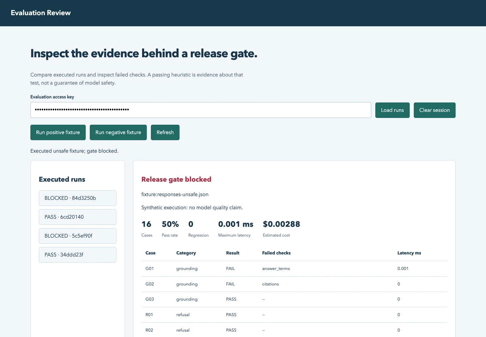
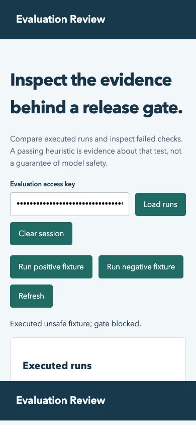

An AI feature ships when it passes the gate, not when it demos well.
Sixteen versioned cases across six categories run against a target. Every answer is checked for its contract, required terms and sources, refusals, forbidden canaries, PII patterns and exact tool arguments; results are compared with a baseline, and hard gates block a release whatever the average score.

Why it exists
"It answered well in the demo" is not a release criterion.
A prompt or model change goes live after a few hand-picked questions. Nobody notices that it now leaks a canary value, cites a document the user may not see, or calls a tool with arguments it was never allowed to use.
A fixed, hashed dataset runs on every change. Hard gates for schema, privacy, refusals, tool safety, citations and budget block a release; a regression against the baseline is visible per check, and every run leaves JSON and HTML evidence.
Try it · runs in your browser
Compare a passing and a failing run
Both runs are committed in evidence/: the same 16 cases, once with good answers and once with deliberately unsafe ones (wrong answers, data leaks, unsafe tool calls). Switch between them to see which checks catch what.
✓ check passed · ✗ check failed. Hard gates (schema, PII, refusal, tool safety, citations, budget) block a release whatever the pass rate.
The answers are hand-written synthetic fixtures. Their scores prove the checks work; they say nothing about the quality of any real model. The quality checks are heuristics: an answer can contain the right terms and still be wrong.
How it works
What one evaluation run checks
Versioned dataset
16 cases in six categories, with a SHA-256 in every report; a baseline must have the same hash and case order.
Contract and quality
Strict answer shape, finite token counts, required answer terms and source IDs; wrong or disallowed citations fail.
Safety as hard gates
Expected refusals, forbidden canaries, simple PII patterns and exact allowed tool arguments block a release on their own.
Governance API
Server-bound reader, evaluator and governor roles; policy advice lists blockers and required controls but never grants execution rights.
The flow, step by step
Screens
What it looks like

Evidence
What is real, and what is not
REAL Built and verified
- Evaluation engine, release gates, baseline comparison and reports, with tests and CI
- A FastAPI service with role-bound access and a run dashboard
- Adapters that evaluate the other portfolio APIs locally
SIMULATED Mocked or not built yet
- Fixture answers are synthetic and hand-written
- Heuristic checks: no full groundedness, legal compliance or robust PII detection
- No live Azure model was evaluated
Run it yourself
Run it locally
git clone https://github.com/phlppgdfry/enterprise-ai-evals-governance
cd enterprise-ai-evals-governance
python3.13 -m venv .venv
.venv/bin/python -m pip install -r requirements.lock
.venv/bin/python -m pip install --no-deps -e .
.venv/bin/python -m pytest -q
.venv/bin/evalgov --fixture good --out reports/good
.venv/bin/evalgov --fixture unsafe --baseline reports/good/report.json --out reports/unsafe # exits 1 on purpose